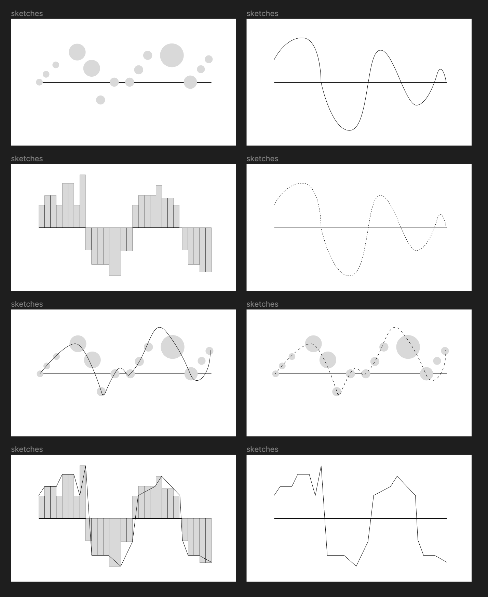
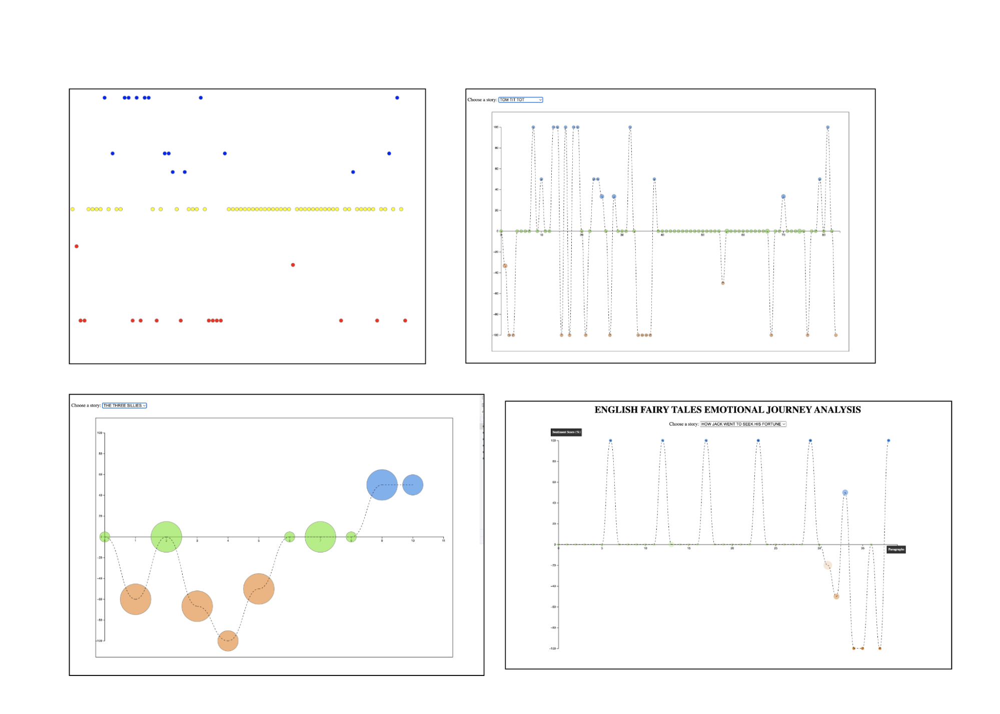

PROCESS BOOK
Questions
What do you want to achieve with the visualization?
My visualization aims to demonstrate the emotional journey of a story before reading it.
What tasks do you want to support?
My visualization supports the following tasks:
- Users can select different stories to analyze
- Visualize the emotional journey of a story by analyzing each paragraph
- Opacity is proportional to the sentiment score percentage
- Circle size is proportional to the paragraph size (i.e. the number of sentences)
- When hovering over each paragraph circle, the exact sentiment scores will be displayed in the bottom right corner.
What designs will help you accomplish these? Name at least two.
- The dashed line connecting each paragraph circle provides visual continuity, consequently directing users’ attention from left to right in order to illustrate the emotional ups and downs of the story(i.e. the narrative).
- In addition to the placement, the shape, opacity, and size of each paragraph (circle) show the emotional intensity of each paragraph, therefore supporting the narrative. I used circles instead of rectangles to represent each paragraph, as circles provide fluidity and serve as better interaction points. Since my goal aim is to demonstrate the emotional journey of a story, ensuring fluidity in the graph is essential.
- The title, axes, and labels of the graph provide context to the viewer, thus strengthening the clarity of the visualization’s narrative to demonstrate the chosen story’s emotional journey.
Sketches

Design Development

Justification
In my final design, I made the following design decisions to illustrate the emotional narrative of each story.
- The dashed line connecting each paragraph circle provides visual continuity, consequently directing users’ attention from left to right in order to illustrate the emotional ups and downs of the story(i.e. the narrative).
- In addition to the placement, the shape, opacity, and size of each paragraph (circle) show the emotional intensity of each paragraph, therefore supporting the narrative. I used circles instead of rectangles to represent each paragraph, as circles provide fluidity and serve as better interaction points. Since my goal aim is to demonstrate the emotional journey of a story, ensuring fluidity in the graph is essential.
- The title, axes, and labels of the graph provide context to the viewer, thus strengthening the clarity of the visualization’s narrative to demonstrate the chosen story’s emotional journey.